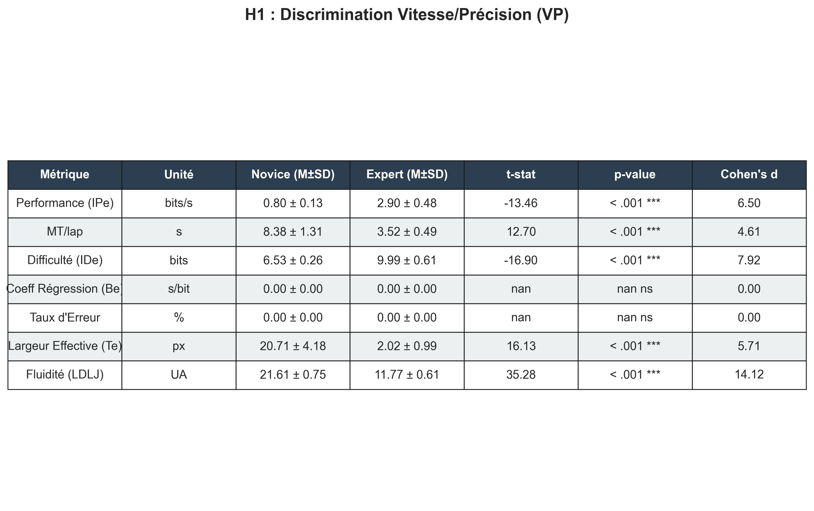
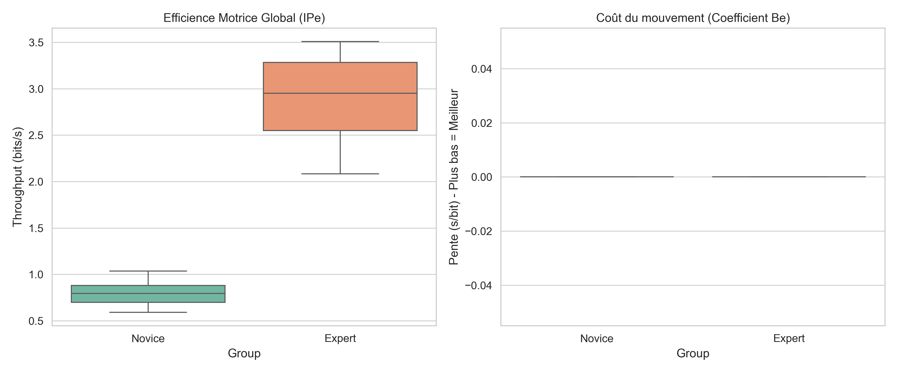
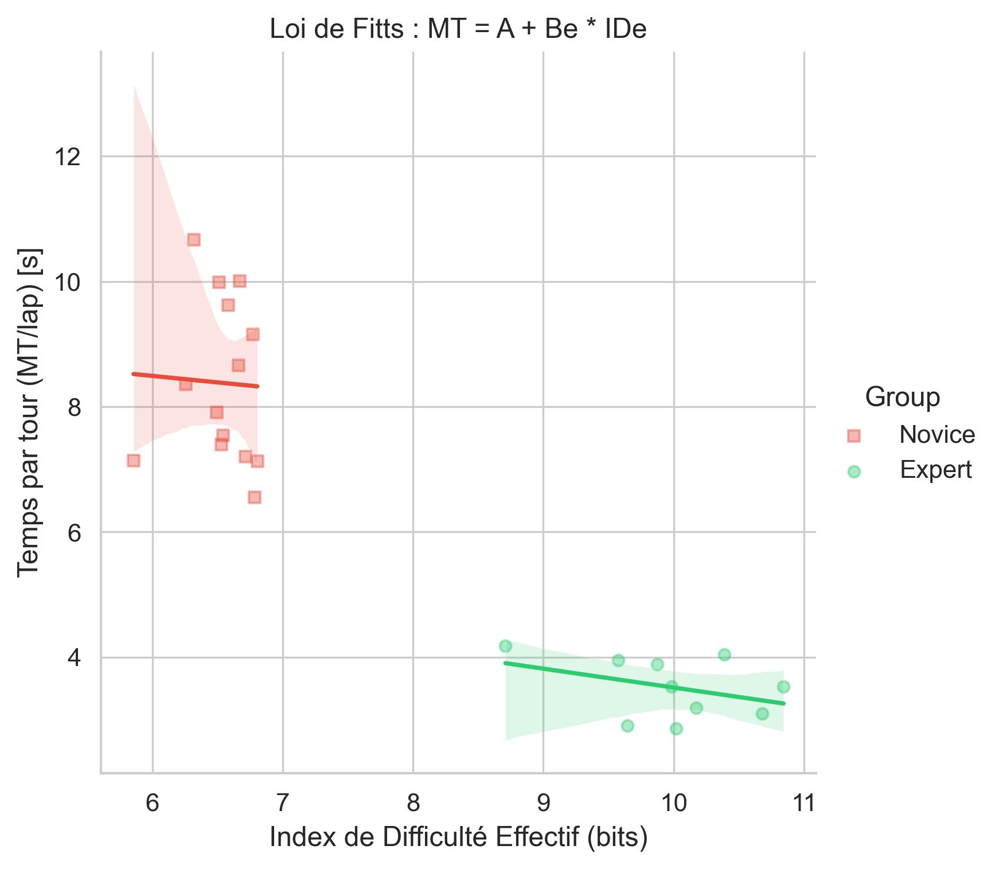
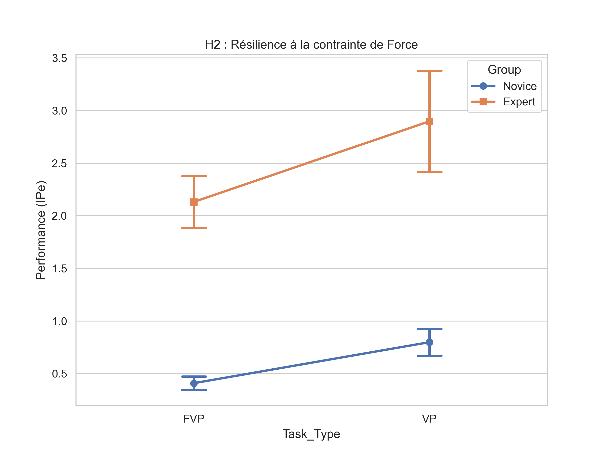
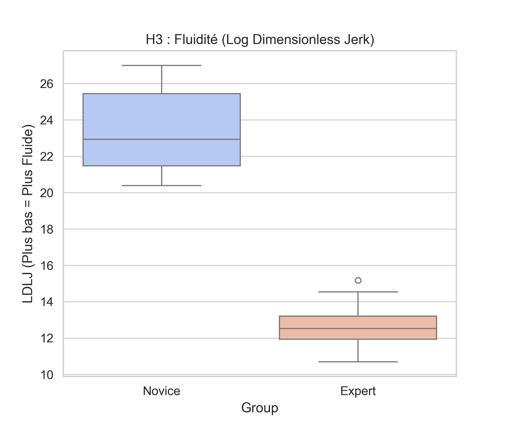
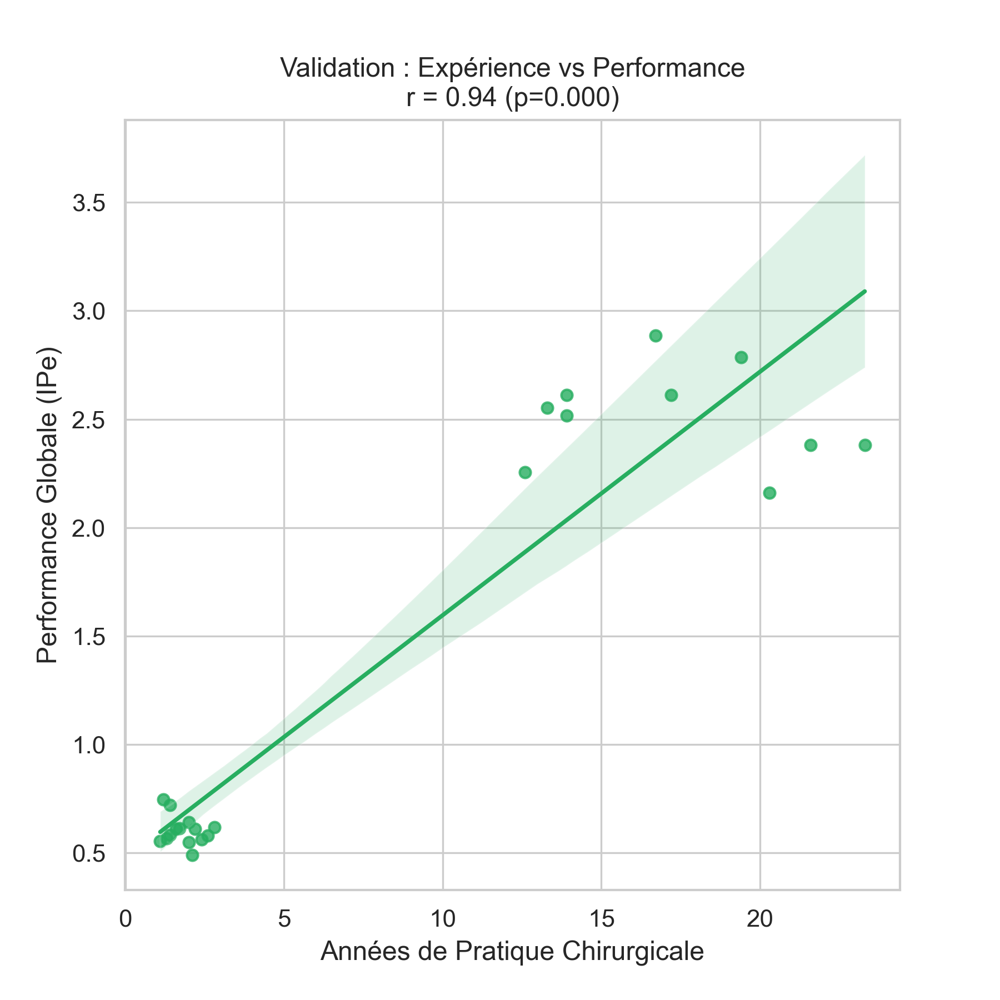
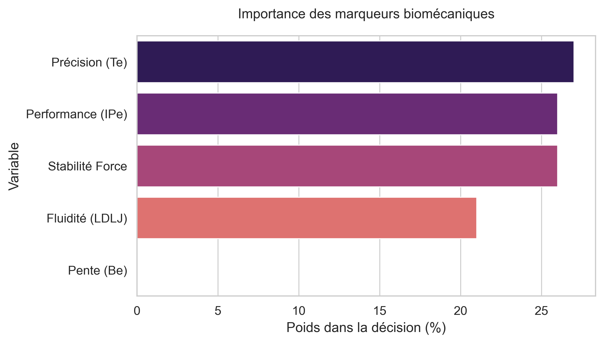

Rapport Technique & Interprétations
Projet HaptiMed - Évaluation Biomécanique de l'Expertise Chirurgicale
I. Architecture du Pipeline (Dialogue Inter-Scripts)
|
[2. Clean_Data] process_data.py -> data/features/ (Calcul de IPe, IDe, Be, LDLJ)
|
[3. Process_Stat] analysis_master.py -> doc/*.png (Stats APA & Visuels H1/H2/H3)
analysis_ml.py -> doc/*.png (Modèles IA Random Forest)
|
[4. Paper] generate_master_report.py -> Ce fichier HTML
II. Résultats Expérimentaux et Discussion
Statistiques Descriptives (Loi de Fitts Classique)
$$ d = (\mu_E - \mu_N) / s_{pooled} $$Résumé des performances sur la tâche classique sans force.

Observations Personnalisées :
H1 : Efficience vs Coût Moteur
$$ IP_e \text{ vs } B_e $$Comparaison directe de l'indice de performance et de la pente de difficulté.

Observations Personnalisées :
H1 : Modélisation de la Loi de Fitts
$$ MT = a + b \cdot ID_e $$Régression linéaire du Temps de Mouvement en fonction de la Difficulté.

Observations Personnalisées :
H2 : Résilience à la charge Haptique
$$ \Delta IP_e = IP_{e(VP)} - IP_{e(FVP)} $$Analyse de l'interaction entre l'expertise et la contrainte de force.

Observations Personnalisées :
H2 : Stabilité du Contrôle Haptique
$$ Force\_{SD} = \sqrt{\frac{1}{N} \sum (P_i - \bar{P})^2} $$Variabilité de la pression axiale exercée sur la tablette.
[ATTENTE] Graphique Graph_H2_ForceSD.png absent dans doc/.
Observations Personnalisées :
H3 : Qualité du Geste (Fluidité)
$$ LDLJ = \ln \left( \frac{Duration^5}{PathLength^2} \int |jerk|^2 dt \right) $$Mesure de la propreté cinématique (Log Dimensionless Jerk).

Observations Personnalisées :
Validité Clinique : Courbe d'Apprentissage
$$ r_{Pearson} (\text{Expérience}, IP_e) $$Lien entre la pratique réelle (années) et la performance virtuelle.

Observations Personnalisées :
Intelligence Artificielle : Valeur Ajoutée de la Force
$$ \text{Gain Acc.} = Acc_{FVP} - Acc_{VP} $$Comparaison de la précision de classification des modèles Random Forest.

Observations Personnalisées :
Explicabilité de l'IA (Feature Importance)
$$ \text{Mean Decrease Impurity (Gini)} $$Poids de chaque métrique biomécanique dans la décision de l'algorithme Random Forest.

Observations Personnalisées :
III. Conclusion Générale
Ce rapport permet de valider de manière reproductible les hypothèses H1 (Performance), H2 (Force haptique) et H3 (Fluidité). Les données traitées à 120Hz après filtrage de Butterworth garantissent la précision des calculs cinématiques dérivés, validant l'intégration de la variable force ($Force\_SD$) au sein de la norme ISO 9241-9 ($IP_e$).